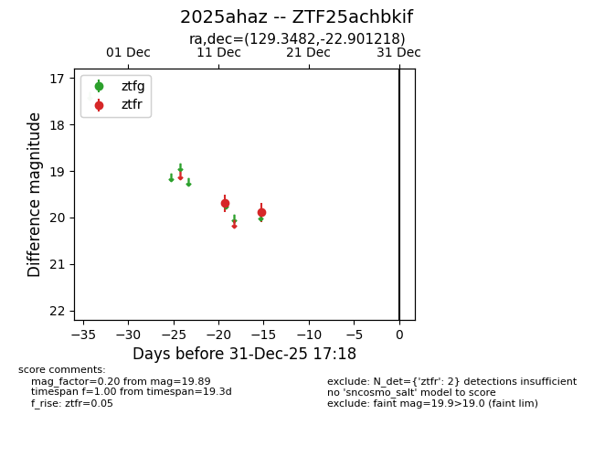
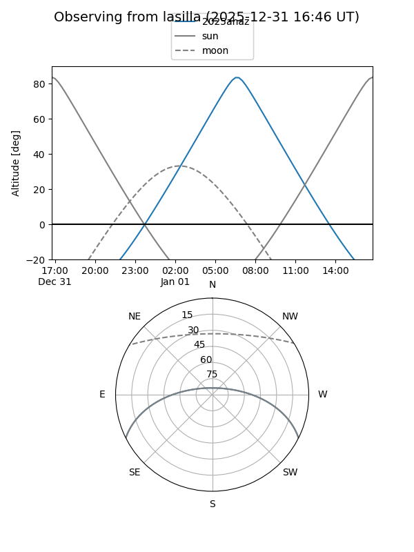
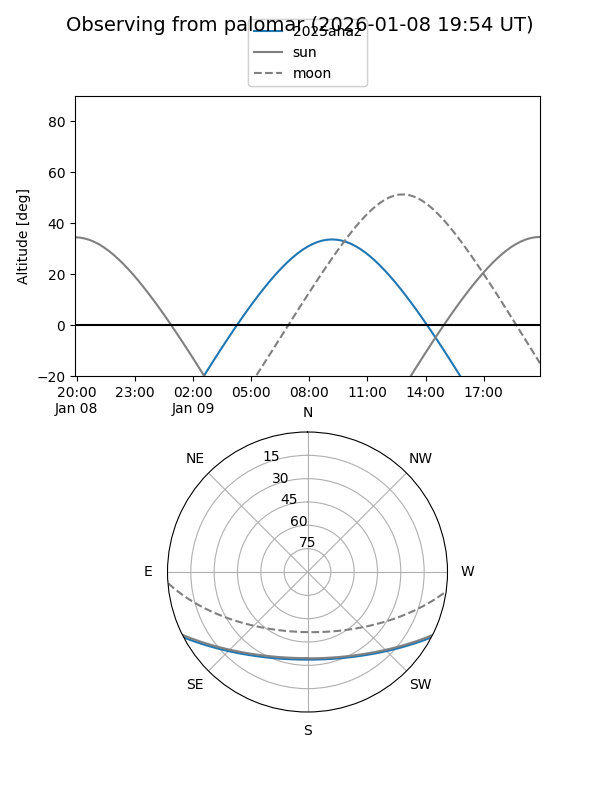

2025ahaz
Target 2025ahaz at 2025-12-18 10:53
Aliases and brokers:
FINK: fink-portal.org/ZTF25achbkif
Lasair: lasair-ztf.lsst.ac.uk/objects/ZTF25achbkif
ALeRCE: alerce.online/object/ZTF25achbkif
TNS: wis-tns.org/object/2025ahaz
YSE: ziggy.ucolick.org/yse/transient_detail/2025ahaz
alt names
ZTF25achbkif (ztf,fink_ztf)
2025ahaz (tns,yse)
Coordinates:
equatorial (ra, dec) = 129.3482,-22.90122
equatorial (HMS+DMS) = 08:37:23.57,-22:54:04.39
galactic (l, b) = (245.8469,+10.84903)
Photometry
last ztfr=19.89
2 ztfr detections
Lightcurve

Visibility


Additional plots